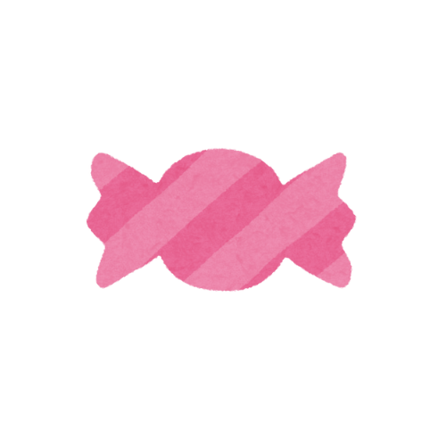

Kana Flashcard
Click the sound button above to hear how a kana is pronounced,
and the sound button below to hear how to say a vocabulary.
a
あ

(ame)
あめ
—
candy / rain
When the fish got stabbed by the sword, it went a!
← Previous
Next →